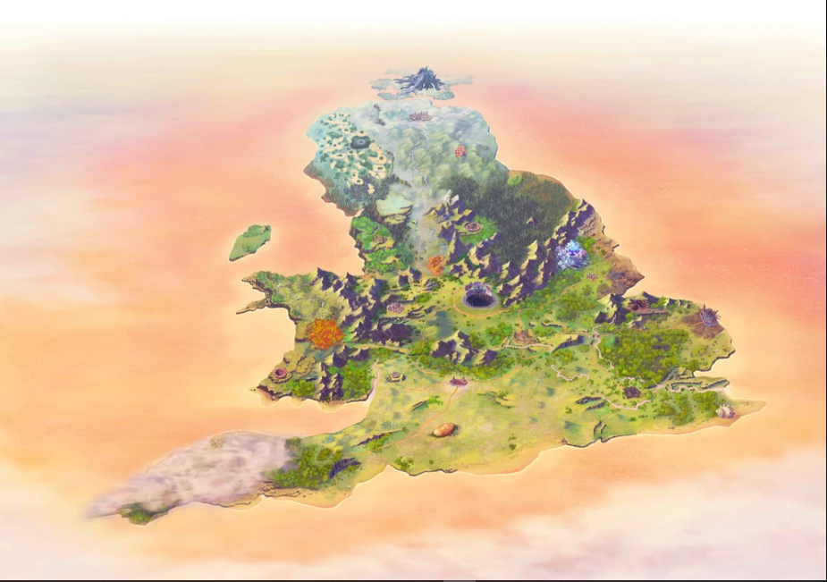

Cornwall
Vila de fadas rejeitadas
Pequeno povoado antigo onde Ritsuka, Mash e Tristan despertam. Abriga fadas malvistas pelo restante do reino e é o início da jornada em Avalon Le Fae.
Um conceito do mapa.

Vila de fadas rejeitadas
Pequeno povoado antigo onde Ritsuka, Mash e Tristan despertam. Abriga fadas malvistas pelo restante do reino e é o início da jornada em Avalon Le Fae.
Território sem governante definido
Floresta coberta de névoa que faz quem se perde nela esquecer a própria identidade. É onde o grupo perde a memória e acaba separado.
Clã Wind (Aurora)
A única cidade livre da Bretanha, onde fadas e humanos convivem com independência. Abriga a Catedral da Árvore Cinzenta e serve de base para Chaldea.
Refúgio dos rebeldes
Cidade do sul defendida por remanescentes do Exército da Távola Redonda contra os ataques de Mors e do Clã Fang.
Clã Earth (Spriggan)
Cidade ameaçada pela Calamidade de Norwich, uma nuvem de fuligem negra e Mofo. Sua torre de sinos tem paredes de ferro que repelem o Mofo.
Ligada ao Clã Fang
Cidade que aceita os refugiados de Norwich e favorece o aumento do exército e da remessa de humanos.
Clã Wing (Muryan)
Cidade neutra e autônoma, onde vale a regra da "negação da força": todos perdem o poder adquirido ao entrar. Realiza um leilão diário de itens raros.
Território do Clã Mirror
Região dos lagos do clã dos espelhos, hoje assombrada pelas Nightcalls. Ali são encontrados os restos de Albion.
Cidade do norte
Cenário de um respiro leve na história: um concurso de confeitaria que contrasta com o tom sombrio do restante do Lostbelt.
Sob Baobhan Sith
Cidade onde são enviados os humanos encontrados sem um mestre fada. Foi reconstruída depois de ser destruída por uma calamidade e é governada por Baobhan Sith.
Extremo norte
Região gelada ao norte da ilha. Aparece na história durante a jornada de Mash, quando ela é selada em um caixão de gelo.
Rainha Morgan
Capital de Avalon Le Fae, no centro da Bretanha. Funciona como um gigantesco reator mágico alimentado pelos clãs, e é onde ficam os Cavaleiros Feéricos. A entrada exige permissão de Morgan.
Clã do norte
Território nortenho cujas fadas já governaram a Bretanha. Seu exército avança contra Morgan e representa uma ameaça ao trono.
Resumo baseado no TYPE-MOON Wiki e no TV Tropes. Contém pequenos spoilers do Lostbelt 6.